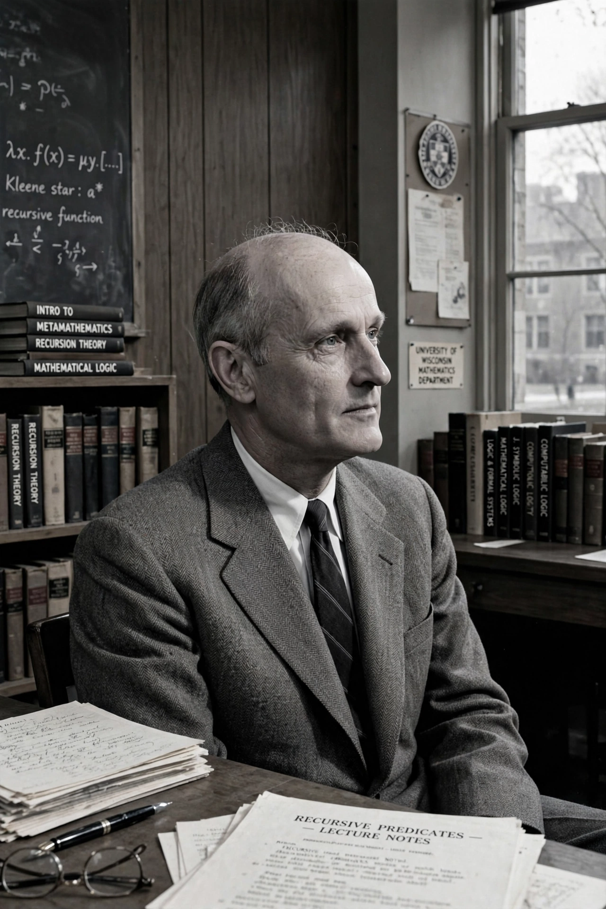

| Born | January 5, 1909, Hartford, Connecticut, U.S. |
|---|---|
| Died | January 25, 1994 (aged 85), Madison, Wisconsin, U.S. |
| Education | Amherst College (BA), Princeton University (MA, PhD) |
| Known for | Recursion theory, regular expressions, Kleene star, Kleene's theorem |
| Institutions | University of Wisconsin–Madison |

Stephen Cole Kleene (January 5, 1909 – January 25, 1994) was an American mathematician and logician. One of the students of Alonzo Church, Kleene, along with Rózsa Péter, Alan Turing, Emil Post, and others, is best known as a founder of the branch of mathematical logic known as recursion theory, which subsequently helped to provide the foundations of theoretical computer science.
Kleene graduated from Amherst College in 1930 and received his PhD from Princeton in 1934 with a dissertation on the lambda calculus supervised by Church. He spent most of his career at the University of Wisconsin–Madison, where he founded the mathematics logic program and served as dean of the College of Letters and Science. During the Second World War he served in the U.S. Navy as an instructor in navigation.
Kleene's work includes the Kleene star (the "*" operator ubiquitous in regular expressions), Kleene's theorem equating regular expressions and finite automata, the arithmetical hierarchy, the s-m-n theorem, Kleene's recursion theorems, and intuitionistic realizability. His textbooks Introduction to Metamathematics (1952) and Mathematical Logic (1967) trained generations of logicians. The Kleene Award for best student paper at the IEEE Symposium on Logic in Computer Science is named in his honor.
From Wikipedia, the free encyclopedia. Recreated from memory.